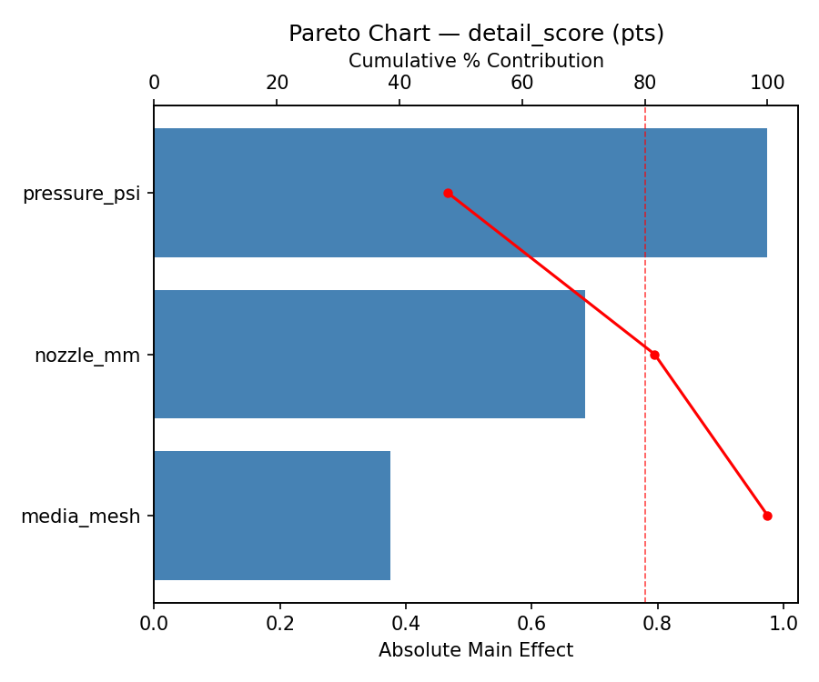
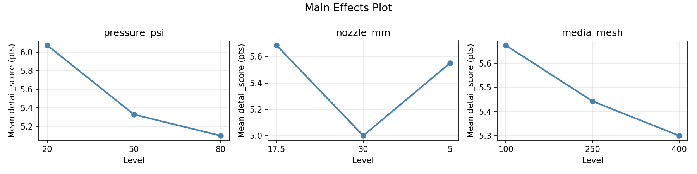
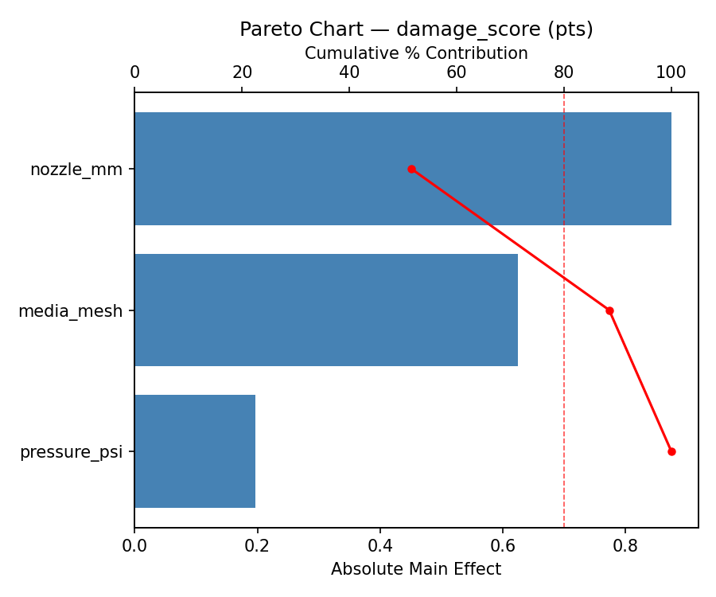
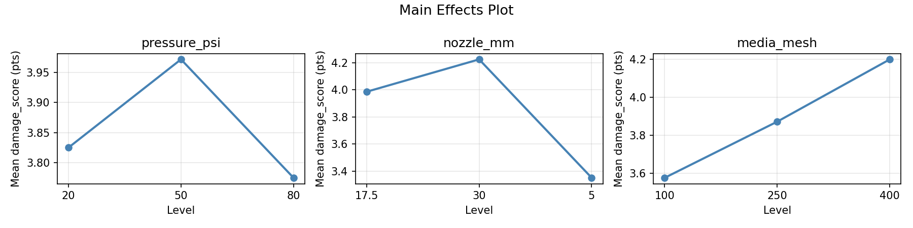
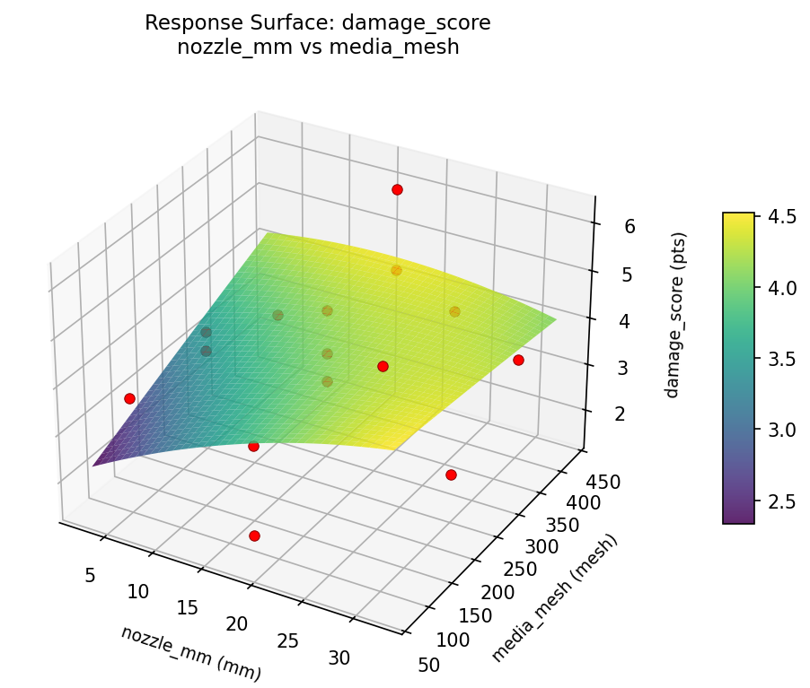
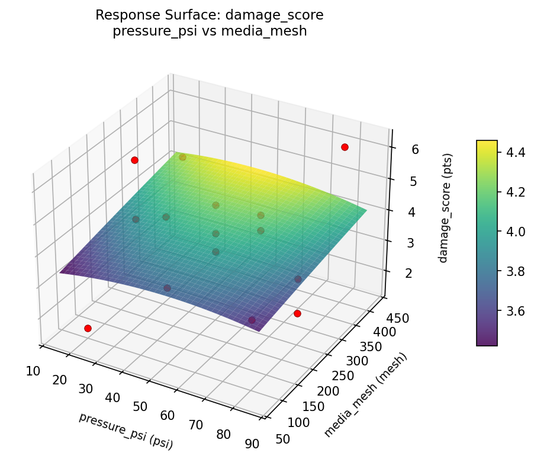
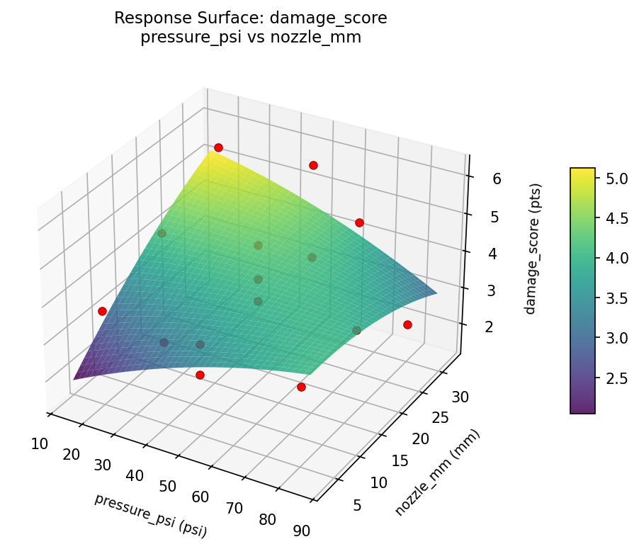
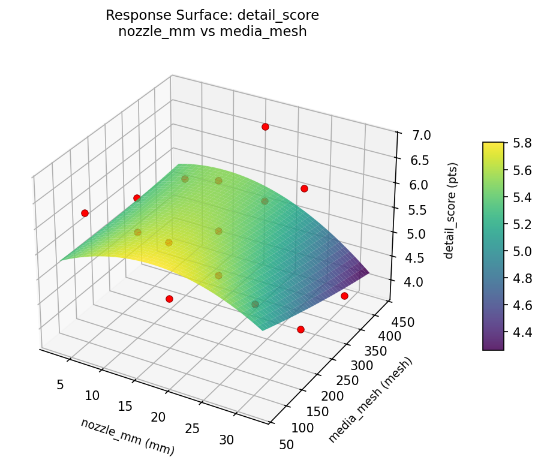
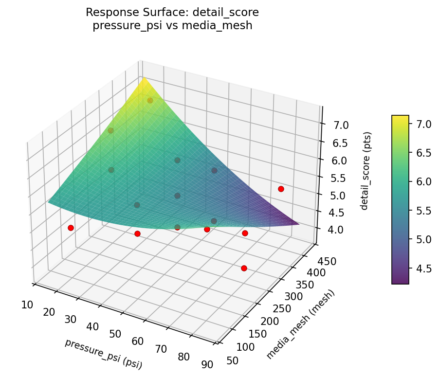
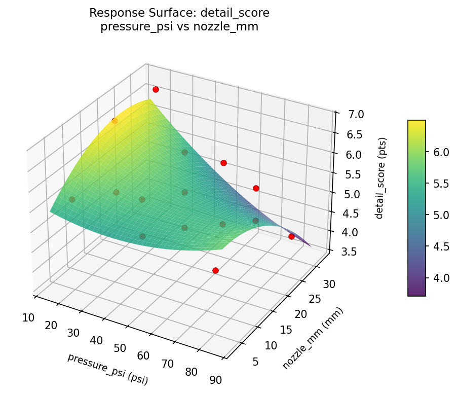

Summary
This experiment investigates fossil preparation technique. Box-Behnken design to maximize fossil detail preservation and minimize matrix damage by tuning air abrasive pressure, nozzle distance, and media grit.
The design varies 3 factors: pressure psi (psi), ranging from 20 to 80, nozzle mm (mm), ranging from 5 to 30, and media mesh (mesh), ranging from 100 to 400. The goal is to optimize 2 responses: detail score (pts) (maximize) and damage score (pts) (minimize). Fixed conditions held constant across all runs include media type = sodium_bicarbonate, fossil = trilobite.
A Box-Behnken design was chosen because it efficiently fits quadratic models with 3 continuous factors while avoiding extreme corner combinations — requiring only 15 runs instead of the 8 needed for a full factorial at two levels.
Quadratic response surface models were fitted to capture potential curvature and factor interactions. The RSM contour plots below visualize how pairs of factors jointly affect each response.
Key Findings
For detail score, the most influential factors were pressure psi (47.9%), nozzle mm (33.7%), media mesh (18.4%). The best observed value was 6.8 (at pressure psi = 20, nozzle mm = 17.5, media mesh = 100).
For damage score, the most influential factors were nozzle mm (51.6%), media mesh (36.8%), pressure psi (11.6%). The best observed value was 1.5 (at pressure psi = 20, nozzle mm = 30, media mesh = 250).
Recommended Next Steps
- Run confirmation experiments at the predicted optimal settings to validate the model.
- Consider whether any fixed factors should be varied in a future study.
Experimental Setup
Factors
| Factor | Low | High | Unit |
|---|
pressure_psi | 20 | 80 | psi |
nozzle_mm | 5 | 30 | mm |
media_mesh | 100 | 400 | mesh |
Fixed: media_type = sodium_bicarbonate, fossil = trilobite
Responses
| Response | Direction | Unit |
|---|
detail_score | ↑ maximize | pts |
damage_score | ↓ minimize | pts |
Configuration
{
"metadata": {
"name": "Fossil Preparation Technique",
"description": "Box-Behnken design to maximize fossil detail preservation and minimize matrix damage by tuning air abrasive pressure, nozzle distance, and media grit"
},
"factors": [
{
"name": "pressure_psi",
"levels": [
"20",
"80"
],
"type": "continuous",
"unit": "psi"
},
{
"name": "nozzle_mm",
"levels": [
"5",
"30"
],
"type": "continuous",
"unit": "mm"
},
{
"name": "media_mesh",
"levels": [
"100",
"400"
],
"type": "continuous",
"unit": "mesh"
}
],
"fixed_factors": {
"media_type": "sodium_bicarbonate",
"fossil": "trilobite"
},
"responses": [
{
"name": "detail_score",
"optimize": "maximize",
"unit": "pts"
},
{
"name": "damage_score",
"optimize": "minimize",
"unit": "pts"
}
],
"settings": {
"operation": "box_behnken",
"test_script": "use_cases/237_fossil_preparation/sim.sh"
}
}
Experimental Matrix
The Box-Behnken Design produces 15 runs. Each row is one experiment with specific factor settings.
| Run | pressure_psi | nozzle_mm | media_mesh |
|---|
| 1 | 50 | 5 | 100 |
| 2 | 50 | 17.5 | 250 |
| 3 | 80 | 17.5 | 400 |
| 4 | 80 | 17.5 | 100 |
| 5 | 50 | 17.5 | 250 |
| 6 | 50 | 17.5 | 250 |
| 7 | 20 | 17.5 | 400 |
| 8 | 80 | 5 | 250 |
| 9 | 50 | 5 | 400 |
| 10 | 80 | 30 | 250 |
| 11 | 20 | 17.5 | 100 |
| 12 | 50 | 30 | 400 |
| 13 | 20 | 5 | 250 |
| 14 | 20 | 30 | 250 |
| 15 | 50 | 30 | 100 |
Step-by-Step Workflow
1
Preview the design
$ python doe.py info --config use_cases/237_fossil_preparation/config.json
2
Generate the runner script
$ python doe.py generate --config use_cases/237_fossil_preparation/config.json \
--output use_cases/237_fossil_preparation/results/run.sh --seed 42
3
Execute the experiments
$ bash use_cases/237_fossil_preparation/results/run.sh
4
Analyze results
$ python doe.py analyze --config use_cases/237_fossil_preparation/config.json
5
Get optimization recommendations
$ python doe.py optimize --config use_cases/237_fossil_preparation/config.json
6
Generate the HTML report
$ python doe.py report --config use_cases/237_fossil_preparation/config.json \
--output use_cases/237_fossil_preparation/results/report.html
Features Exercised
| Feature | Value |
|---|
| Design type | box_behnken |
| Factor types | continuous (all 3) |
| Arg style | double-dash |
| Responses | 2 (detail_score ↑, damage_score ↓) |
| Total runs | 15 |
Analysis Results
Generated from actual experiment runs using the DOE Helper Tool.
Response: detail_score
Top factors: pressure_psi (47.9%), nozzle_mm (33.7%), media_mesh (18.4%).
Pareto Chart

Main Effects Plot

Response: damage_score
Top factors: nozzle_mm (51.6%), media_mesh (36.8%), pressure_psi (11.6%).
Pareto Chart

Main Effects Plot

Response Surface Plots
3D surfaces fitted with quadratic RSM. Red dots are observed data points.
damage score nozzle mm vs media mesh

damage score pressure psi vs media mesh

damage score pressure psi vs nozzle mm

detail score nozzle mm vs media mesh

detail score pressure psi vs media mesh

detail score pressure psi vs nozzle mm

Full Analysis Output
RSM surface: rsm_detail_score_pressure_psi_vs_nozzle_mm.png
RSM surface: rsm_detail_score_pressure_psi_vs_media_mesh.png
RSM surface: rsm_detail_score_nozzle_mm_vs_media_mesh.png
RSM surface: rsm_damage_score_pressure_psi_vs_nozzle_mm.png
RSM surface: rsm_damage_score_pressure_psi_vs_media_mesh.png
RSM surface: rsm_damage_score_nozzle_mm_vs_media_mesh.png
=== Main Effects: detail_score ===
Factor Effect Std Error % Contribution
--------------------------------------------------------------
pressure_psi 0.9750 0.2370 47.9%
nozzle_mm 0.6857 0.2370 33.7%
media_mesh 0.3750 0.2370 18.4%
=== Summary Statistics: detail_score ===
pressure_psi:
Level N Mean Std Min Max
------------------------------------------------------------
20 4 6.0750 0.8846 5.0000 6.8000
50 7 5.3286 0.9160 3.8000 6.5000
80 4 5.1000 0.8679 4.0000 6.1000
nozzle_mm:
Level N Mean Std Min Max
------------------------------------------------------------
17.5 7 5.6857 0.8071 4.6000 6.8000
30 4 5.0000 1.3952 3.8000 6.8000
5 4 5.5500 0.5196 5.0000 6.2000
media_mesh:
Level N Mean Std Min Max
------------------------------------------------------------
100 4 5.6750 0.5737 5.0000 6.2000
250 7 5.4429 1.0014 4.0000 6.8000
400 4 5.3000 1.2247 3.8000 6.8000
=== Main Effects: damage_score ===
Factor Effect Std Error % Contribution
--------------------------------------------------------------
nozzle_mm 0.8750 0.3406 51.6%
media_mesh 0.6250 0.3406 36.8%
pressure_psi 0.1964 0.3406 11.6%
=== Summary Statistics: damage_score ===
pressure_psi:
Level N Mean Std Min Max
------------------------------------------------------------
20 4 3.8250 1.7347 1.5000 5.6000
50 7 3.9714 1.0404 2.8000 5.8000
80 4 3.7750 1.7056 2.2000 6.2000
nozzle_mm:
Level N Mean Std Min Max
------------------------------------------------------------
17.5 7 3.9857 1.4645 1.5000 6.2000
30 4 4.2250 1.7633 2.2000 5.8000
5 4 3.3500 0.4041 2.8000 3.7000
media_mesh:
Level N Mean Std Min Max
------------------------------------------------------------
100 4 3.5750 1.7595 1.5000 5.8000
250 7 3.8714 1.1131 2.2000 5.6000
400 4 4.2000 1.5122 2.8000 6.2000
Pareto chart (detail_score): use_cases/237_fossil_preparation/results/analysis/pareto_detail_score.png
Pareto chart (damage_score): use_cases/237_fossil_preparation/results/analysis/pareto_damage_score.png
Main effects (detail_score): use_cases/237_fossil_preparation/results/analysis/main_effects_detail_score.png
Main effects (damage_score): use_cases/237_fossil_preparation/results/analysis/main_effects_damage_score.png
Optimization Recommendations
=== Optimization: detail_score ===
Direction: maximize
Best observed run: #3
pressure_psi = 20
nozzle_mm = 17.5
media_mesh = 100
Value: 6.8
RSM Model (linear, R² = 0.2205, Adj R² = 0.0079):
Coefficients:
intercept +5.4667
pressure_psi -0.0000
nozzle_mm -0.3500
media_mesh -0.4500
RSM Model (quadratic, R² = 0.4182, Adj R² = -0.6291):
Coefficients:
intercept +4.7667
pressure_psi -0.0000
nozzle_mm -0.3500
media_mesh -0.4500
pressure_psi*nozzle_mm -0.0250
pressure_psi*media_mesh +0.0750
nozzle_mm*media_mesh +0.1250
pressure_psi^2 +0.6542
nozzle_mm^2 +0.4542
media_mesh^2 +0.2042
Curvature analysis:
pressure_psi coef=+0.6542 convex (has a minimum)
nozzle_mm coef=+0.4542 convex (has a minimum)
media_mesh coef=+0.2042 convex (has a minimum)
Predicted optimum (from linear model):
pressure_psi = 50
nozzle_mm = 5
media_mesh = 100
Predicted value: 6.2667
Model quality: Weak fit — consider adding center points or using a different design.
Factor importance:
1. media_mesh (effect: 0.9, contribution: 40.0%)
2. nozzle_mm (effect: 0.7, contribution: 33.0%)
3. pressure_psi (effect: 0.6, contribution: 27.0%)
=== Optimization: damage_score ===
Direction: minimize
Best observed run: #7
pressure_psi = 20
nozzle_mm = 30
media_mesh = 250
Value: 1.5
RSM Model (linear, R² = 0.1842, Adj R² = -0.0383):
Coefficients:
intercept +3.8800
pressure_psi +0.6250
nozzle_mm +0.3375
media_mesh -0.2375
RSM Model (quadratic, R² = 0.4351, Adj R² = -0.5818):
Coefficients:
intercept +2.9667
pressure_psi +0.6250
nozzle_mm +0.3375
media_mesh -0.2375
pressure_psi*nozzle_mm +0.3500
pressure_psi*media_mesh +0.4500
nozzle_mm*media_mesh +0.1250
pressure_psi^2 +0.0542
nozzle_mm^2 +0.8792
media_mesh^2 +0.7792
Curvature analysis:
nozzle_mm coef=+0.8792 convex (has a minimum)
media_mesh coef=+0.7792 convex (has a minimum)
pressure_psi coef=+0.0542 negligible curvature
Notable interactions:
pressure_psi*media_mesh coef=+0.4500 (synergistic)
pressure_psi*nozzle_mm coef=+0.3500 (synergistic)
Predicted optimum (from linear model):
pressure_psi = 80
nozzle_mm = 30
media_mesh = 250
Predicted value: 4.8425
Model quality: Weak fit — consider adding center points or using a different design.
Factor importance:
1. pressure_psi (effect: 1.2, contribution: 37.2%)
2. nozzle_mm (effect: 1.2, contribution: 34.5%)
3. media_mesh (effect: 1.0, contribution: 28.3%)